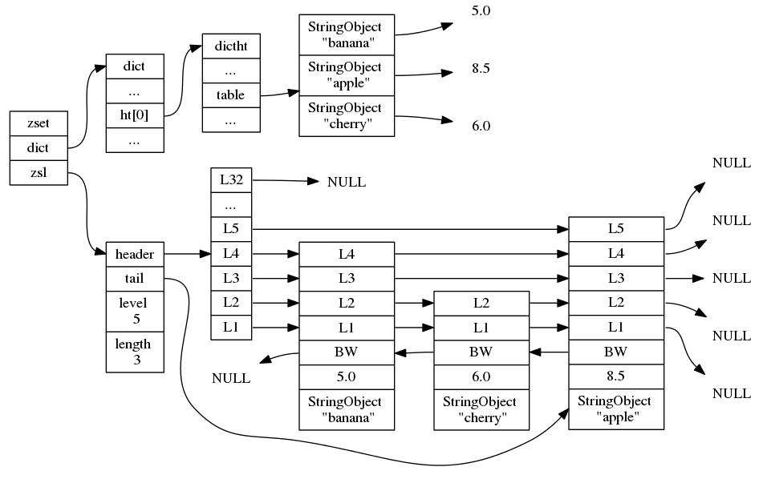
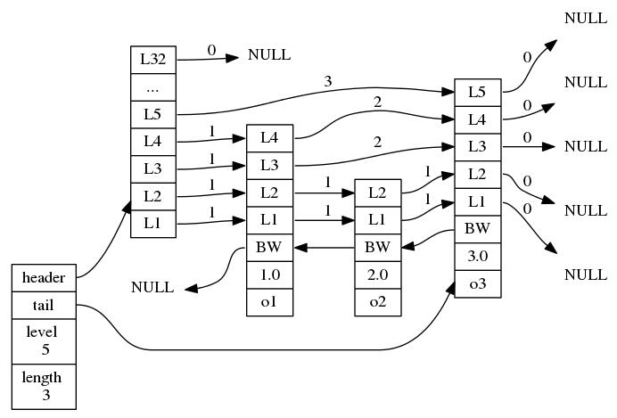

O(1)的skiplist成员查找？
众所周知Redis中每种基本类型都有2种或以上的底层实现，一般谈到ZSET，我们会说它的实现是基于ziplist和skiplist的，这没有问题：
- 当ZSET长度小于设定值（zset-max-ziplist-entries）或成员的长度小于设定值（zset-max-ziplist-value）时会使用ziplist的实现，否则使用skiplist实现
但是当ZSET在使用skiplist实现的时候，它对成员的查找也是O(1)复杂度。根据skiplist的结构，要查找某一个成员必须对各个SkiplistNode进行遍历，因此复杂度为O(n)。所以在ZSET-skiplist的实现中查找成员并不是根据skiplist进行的，而是使用字典（dict）。
先来看一下ZSET的结构源码，Redis5.0.5版本中数据结构的定义在redis/src/server.h中：
typedef struct zset {
dict *dict;
zskiplist *zsl;
} zset;</code></pre>
可以看到一个ZSET结构使用了一个dict和一个zskiplist（特殊版本的skiplist），具体代码在SkipList小节中再叙述。ZSET的结构可以由下图来标识：

通过这样的结构，当ZSET需要进行成员查询的时候，可以根据dict查询，时间复杂度为O(1)；当ZSET需要进行范围查找的时候，根据skiplist结构可以实现平均O(logn)复杂度的查找。
这两种结构单独使用来实现ZSET是可行的，但是dict在范围型操作的时候需要对字典保存的所有元素进行排序因此需要至少O(nlogn)的时间复杂度和额外O(n)的空间复杂度；在单独使用skiplist根据成员查找分值的时候就由O(1)时间复杂度上升到了O(logn)复杂度。因此Redis中选择同时使用dict和skiplist来实现ZSET类型。
SkipList的实现
下面来具体聊一下SkipList数据结构。
在Redis源码中找到跳跃表的相关定义，就在zset的上面几行，补充一些注释：
/* ZSETs use a specialized version of Skiplists */
# 跳跃表节点（ZSET版）
typedef struct zskiplistNode {
# 使用sds来存储成员名字
sds ele;
# 浮点型分数
double score;
# 每个zskiplist节点都带有向前的指针
struct zskiplistNode *backward;
# zskiplist分层，每层中包含指向其他zskiplist节点的指针
struct zskiplistLevel {
# zskiplist节点指针
struct zskiplistNode *forward;
# 本层指向的下个节点离本节点的跨度
unsigned long span;
} level[];
} zskiplistNode;
# 跳跃表
typedef struct zskiplist {
# 分别指向头尾的指针
struct zskiplistNode *header, *tail;
# 长度 即跳跃表中包含的节点数目（头节点不算）
unsigned long length;
# 层数 即跳跃表中各节点层数的最大值（头节点不算）
int level;
} zskiplist;</code></pre>
t的结构可以由下图来表示：
 其中：
- 头节点也是zskiplistNode因此也由对应的分数、向前指针、sds，只不过一般不使用，在图中没有表示出来。
- skiplist结构中level为5，因为在第三个节点中层数为5。
- skiplist结构中length为3，因为一共有头节点（不算在内），o1，o2，o3几个节点。
借助ZSET的各种API，来看一下skiplist在实际中是怎么使用的。
下面代码出现在redis/src/t_zset.c中，实现的是zset的插入成员操作：
# 输入一个zset的skiplist、新成员的得分和名字
zskiplistNode *zslInsert(zskiplist *zsl, double score, sds ele) {
zskiplistNode *update[ZSKIPLIST_MAXLEVEL], *x;
unsigned int rank[ZSKIPLIST_MAXLEVEL];
int i, level;
serverAssert(!isnan(score));
x = zsl->header;
# 从头遍历跳跃表来查找当前元素应该插入在哪个节点之后
for (i = zsl->level-1; i >= 0; i--) {
/* store rank that is crossed to reach the insert position */
rank[i] = i == (zsl->level-1) ? 0 : rank[i+1];
while (x->level[i].forward &&
# 排名是由分数和sds名字共同决定的，同分数下按节点名排序
(x->level[i].forward->score < score ||
(x->level[i].forward->score == score &&
sdscmp(x->level[i].forward->ele,ele) < 0)))
{
# 注意这一句，说明span是用来便于计算节点排名的
rank[i] += x->level[i].span;
x = x->level[i].forward;
}
update[i] = x;
}
/* we assume the element is not already inside, since we allow duplicated
* scores, reinserting the same element should never happen since the
* caller of zslInsert() should test in the hash table if the element is
* already inside or not. */
level = zslRandomLevel();
# 判断是否要重写头节点的level值
if (level > zsl->level) {
for (i = zsl->level; i < level; i++) {
rank[i] = 0;
update[i] = zsl->header;
update[i]->level[i].span = zsl->length;
}
zsl->level = level;
}
x = zslCreateNode(level,score,ele);
for (i = 0; i < level; i++) {
x->level[i].forward = update[i]->level[i].forward;
update[i]->level[i].forward = x;
/* update span covered by update[i] as x is inserted here */
x->level[i].span = update[i]->level[i].span - (rank[0] - rank[i]);
# span实际就是zset两个成员之间的rank差值
update[i]->level[i].span = (rank[0] - rank[i]) + 1;
}
/* increment span for untouched levels */
for (i = level; i < zsl->level; i++) {
update[i]->level[i].span++;
}
x->backward = (update[0] == zsl->header) ? NULL : update[0];
if (x->level[0].forward)
x->level[0].forward->backward = x;
else
zsl->tail = x;
zsl->length++;
return x;
}</code></pre>
可以观察到：
- 跳跃表的不同节点之间由指针和跨度关联
- 跨度值实际上为这两个节点之间的排名差距，如上图中o1与o3的排名差正是o1指向o3的第4层的跨度值2，也可以等于o1至o2的跨度值1加上o2至o3的跨度值1
- 排名取决于分数，同分情况下取决于名字
- 插入节点的时候判断层数是否大于头节点的层数值，是否需要更新
- 节点的层数是
zslRandomLevel()生成的，根据命名每个节点的层数应该是随机的 - 注释中提到了在新增元素的时候要在哈希表中判断是否为重复，zset是不允许重复的成员出现的（但是可以有同分成员）